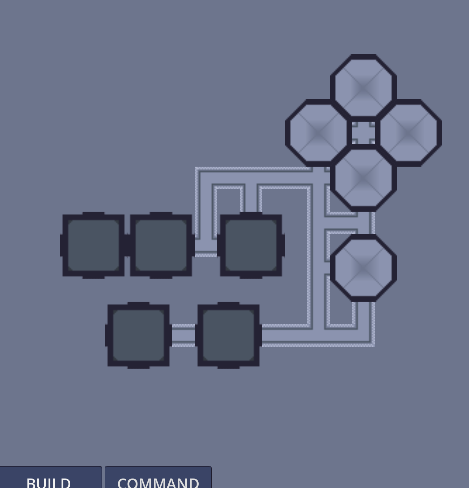
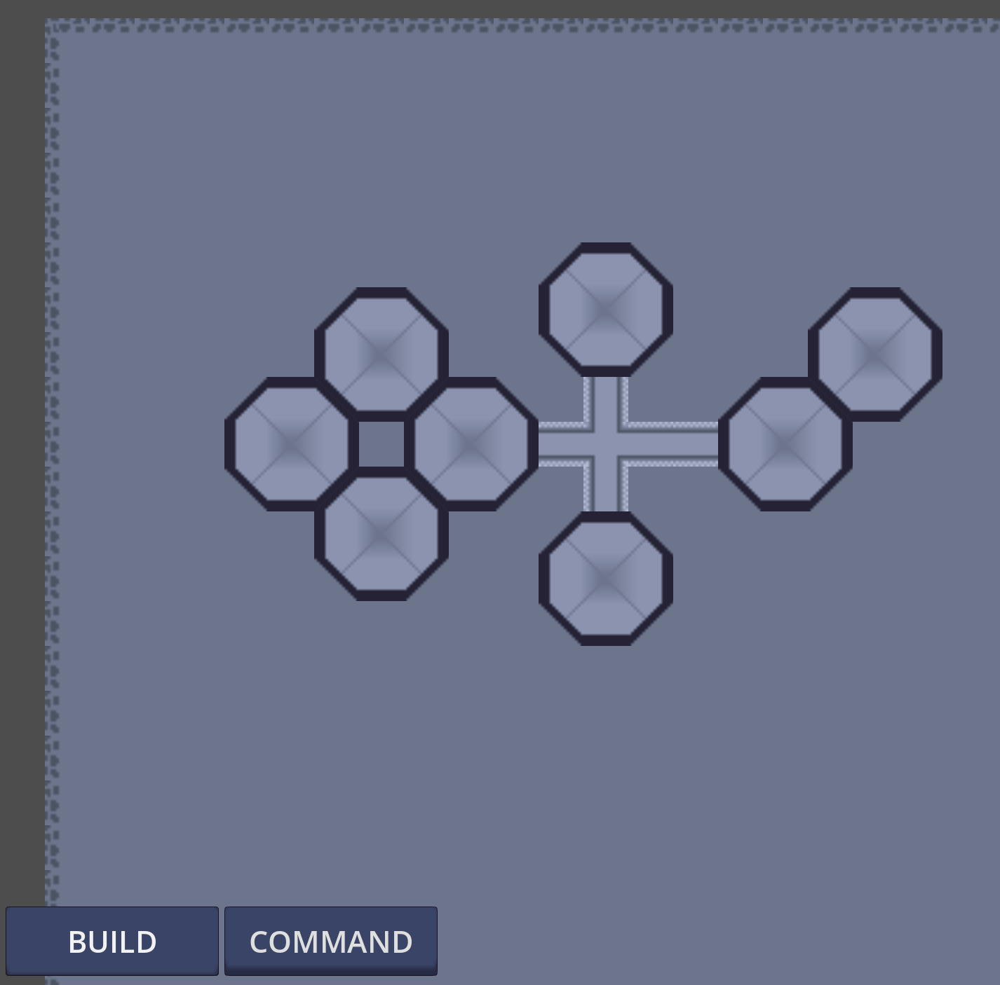

planet colony devblog
Development updates for my top-down colony builder project
A top-down colony builder game made with Godot 4.3. The game draws inspiration from titles like
Rimworld and SimEarth, focusing on colony management and survival mechanics. I used to be a big fan
of SimEarth, but like many of Maxis early "Sim" titles it was more of an interesting demo than a full-fledged
game (I'm looking at you too, SimAnt).
My goal for this project is to create a game that incorporates base/colony building and survival mechanics
(hence my reference to Rimworld), without the focus on individual colonists. The focus is on the colony as
a whole, producing resources from the planet, building infrastructure to support the colony, and developing
a culture and society.
One of the main goals for the player is to terraform the planet - and this is where my SimEarth inspiration
comes in. The game is set in a post-Earth universe (nuclear apocalypse, maybe?) and mankind is forced to rebuild
on other planets.
Eventually, my aim is to incorporate a "soft multiplayer" system, where players do not interact with each other
in real-time, but can interact with each other's colonies (trade, sharing technology, warfare, etc.). I plan
to host the "universe" on a server. The universe is basically a database representing the grids of each planet
and the objects on the grid (placed by players). The actual gameplay occurs entirely on the client side, requiring
an internet connection only to get and post updates to the database.
I don't have much free time these days, but the idea for this project has been stuck in my head for a couple
of years now. I'm hoping that starting this devblog will help me stay motivated to work on it.
If you have any feedback or suggestions, please don't hesitate to contact me :)
February 23, 2025
Added a new type of building. I also made more placeholder sprites for "farming domes", which are transparent domes that function as greenhouses (not pictured in the photo).
Posted: 02/23/2025
February 22, 2025
Since my last update I decided against a wall-creation approach. Instead, whole buildings can be placed at once. I made the UI buttons more aesthetically pleasing and added a pop-up menu to the "BUILD" button which currently gives two options: "dome" and "road". Both objects have placement checking and ghost images to follow the cursor while snapping to a 16x16 grid. The road tiles automatically adjust their autotiling, reusing the code from the "wall placement" function I've since scrapped. The images are still placeholders, but I plan on meeting with a graphic designer friend within the next week or so to see if she would be interested in creating some pixel art for this project.
Posted: 02/22/2025
January 13, 2025
It might not look like much, but this screenshot is the result of a few weeks' worth of trial and error. After returning to Godot after a few years of not using it, I had to familiarize myself with the latest version (4.3). What you're seeing here is a succesful attempt at implementing autotiling in runtime. In other words, I had to create a tileset of the "wall", including every possible configuration of adjacent wall pieces (like intersections, ends, corners, etc.). I used Asesprite for designing the pixel art (all of which are placeholders for now - yes I know they look ugly) and tilesetter for generating the "blob" for use in godot. With the current setup, as the player I'm able to click anywhere on the grid to place wall objects, and the wall pieces will automatically have the correct autotiling applied to them.
Posted: 01/13/2025